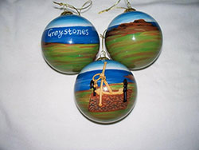
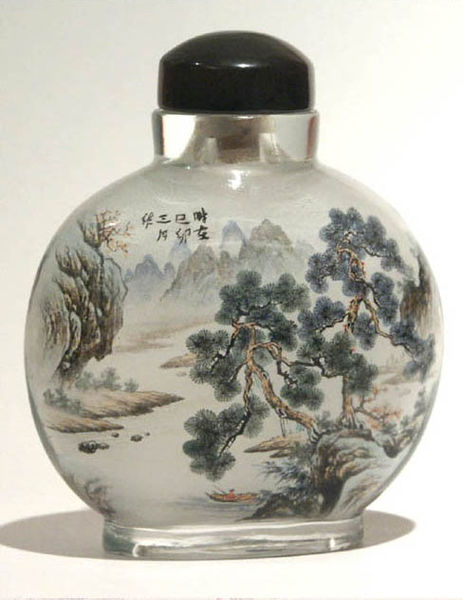

Irish Baubles was founded in the summer of 2011, by 16 year old Ciara Whooley. Ciara entered the Wicklow Student Enterprise Awards in March of 2012, she won 1st place. This secured her a place in the National Student Enterprise Awards where she beat off competition of over 16,600 other students from all over Ireland. Ciara’s inside hand painted glass baubles have been featured on TV3, RTE1, RTE2 and East Coast FM. Irish Baubles have also featured in the Irish Times, The Irish Independent, The Daily Mail, The Irish Tatler and many more newspapers including The Wicklow Times and The Bray People.
Home
Irish Baubles took off when Ciara wanted to capture a scene of her hometown, Greystones inside a glass bauble. She discovered an ancient Chinese art of painting inside glass bottles known as Inner painting and felt that this would be the perfect way to paint her baubles.

Inner painting (simplified Chinese: 内画; traditional Chinese: 內畫;pinyin: nèihuà), also known as inner drawing or inside painted, is a Chinese art form. It involves glass bottles which have pictures and often calligraphy painted on the inside surface of the glass. The bottles are produced by manipulating a specialized paint brush through the neck of the bottle.

Inside-painted bottles are associated with Chinese snuff bottles. The earliest inside painted bottles are thought to have been made in the period between 1820 and 1830 as, by then, the beauty of a snuff bottle was probably more important than utilitarian considerations—-and considering this—few would have been used for holding snuff.
To paint the inside of the bottle, the artist must paint backwards. Concentration is crucial to make precise strokes. A skilled artist may complete a simple bottle in a week while something special may take a month or more. The best craftsmen will produce only a few bottles in a year.
The baubles are all painted from the inside with a delicate, hooked brush, through a tiny opening at the top of the bauble. They are all hand painted, so each and every bauble is truly unique.